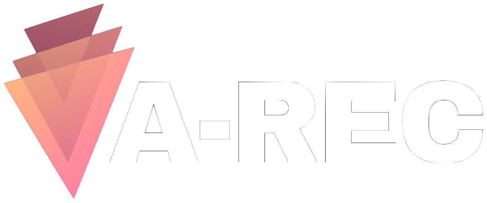
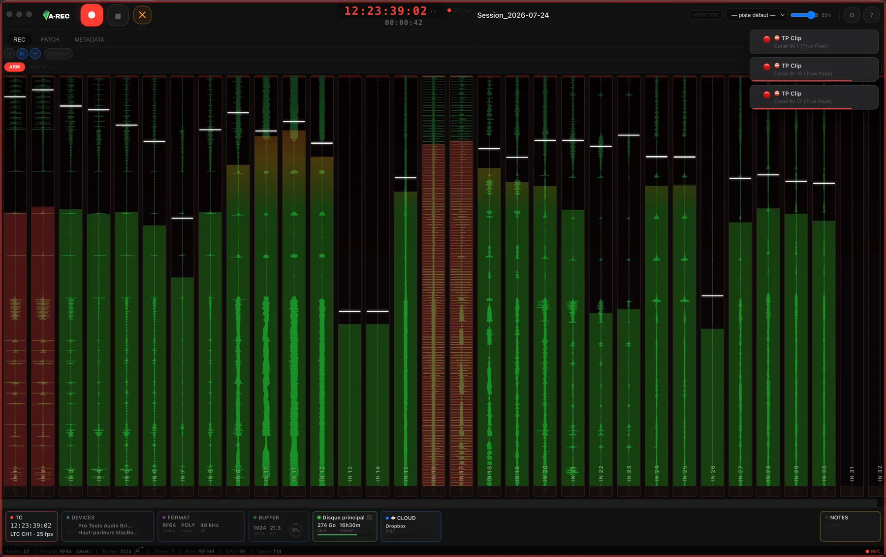

Le test le plus parlant : logo, titre en dégradé, boutons et halo, sur le fond réel du site.

Jusqu'à 512 canaux, timecode détecté automatiquement, écriture simultanée sur plusieurs disques.
Contraste calculé sur le fond #1c1c1e. Seuil WCAG AA pour du petit texte : 4,5:1 — les cinq variantes le passent, la question est donc esthétique, pas réglementaire.
Tous les endroits où la couleur de marque apparaît réellement sur le site.
LTC · MIDI MTC · Tentacle Sync E (BLE) · Time of Day
Vraie redondance temps réel, pas une copie après la prise
Le point sensible : l'app est verte (niveaux) et rouge (REC, True Peak). La couleur de marque doit se distinguer de ces deux-là sans les concurrencer.

Vert — occupé par les niveaux audio dans toute l'app. Le reprendre comme couleur de marque (variante E) crée une ambiguïté : l'utilisateur lit le vert comme « signal OK », pas comme « bouton ».
Rouge / orange — réservés à REC, au clip et aux alertes True Peak. Une marque trop rouge (rose saturé, variante B poussée à l'extrême) entre en concurrence avec ces signaux.
Rose / ambre — absents de l'interface applicative : c'est précisément ce qui rend le dégradé du logo utilisable comme couleur de marque sans collision sémantique.
Mon avis pour chaque option, à confronter à ce que tu vois au-dessus.
Reproduit exactement le dégradé du logo Bernik : le site et la marque parlent d'une seule voix.
L'ambre du haut de dégradé réchauffe, le rose du bas tranche avec le vert des vu-mètres et le rouge du REC.
Un dégradé sur de petites surfaces (badges, puces de liste) se lit presque comme un aplat : l'effet est perdu sous ~40 px.
L'ambre du dégradé et l'ambre du badge BETA (#ff9f0a) se ressemblent sans être identiques — léger flottement dans la nav.
Plus direct, plus mémorisable : une seule teinte, reconnaissable en un coup d'œil dans un onglet.
Meilleure lisibilité des petits éléments qu'un dégradé bi-teinte.
S'éloigne du logo, qui est bien un dégradé — le rappel de marque est plus faible.
Le rose saturé se rapproche du rouge d'alerte à faible luminosité (écran de terrain en plein soleil).
Contraste le plus élevé de toutes les variantes (11:1) : très confortable en extérieur.
Registre « instrument de mesure », cohérent avec un outil de terrain.
Entre directement en conflit avec l'ambre fonctionnel de l'app (badge BETA, avertissements, zone hot des vu-mètres).
Perd la moitié rose du logo, donc la moitié de l'identité Bernik.
L'option la plus sobre : titres et labels en gris clair, dégradé réservé au logo et au bouton principal.
Met les captures d'écran en avant plutôt que la charte — argument fort pour un outil pro.
Le site perd son signal couleur : sans les labels de section colorés, la page paraît plus plate au défilement.
Rend le lien vers la marque Bernik moins évident pour un visiteur qui ne connaît pas encore le logo.
Continuité pour les visiteurs déjà venus, et cohérence avec l'ancien logo VAREC vert.
Ne correspond plus au logo Bernik joint : c'est justement ce que la modernisation corrigeait.
Le vert est la couleur du signal audio dans l'app — collision sémantique dans les captures.
Tout tient dans le bloc :root de styles.v14.css : --brand, --grad, --grad-soft, --on-brand. Aucun composant ne code une couleur en dur.
Cette page n'est pas indexée (noindex + robots.txt) et n'est liée depuis aucune autre page du site. Elle peut rester en ligne comme référence de charte, ou être supprimée une fois la décision prise.